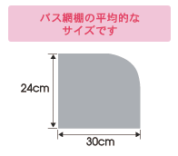
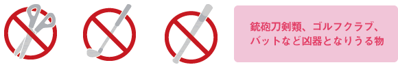
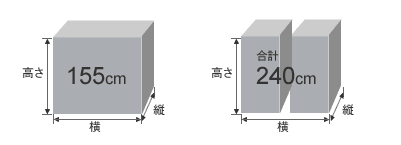

FAQ
各種割引について
- Q: Is there a round-trip discount?
-
Basically applicable, but depending on the discount plan, there may be no round-trip discount setting.
For round-trip discounts, the discount rate differs depending on each discount plan.
Round-trip discounts do not apply if you make a reservation for each way. - Q: Do you have coupons?
-
Sorry, there are no coupons at this time.
- Q: Is a student discount available?
-
Depending on the plan you choose, there is a student discount or not. Please check the details at Discount Rate.
- Q: Who can book the children ticket?
-
Elementary students and below
- Q: About disability discount
-
Persons with disabilities (physical, intellectual, mental, and child welfare) are eligible. 50% discount on regular fares if any of the following conditions are met:
- Handicapped
-
Those who have been issued a certificate of disability issued by the municipalities: 50% discount on mainline and regular fare
- People with intellectual disabilities
-
Those who have received a Rehabilitation Certificate issued by the ward, municipalities: 50% discount on mainline and regular fare
- Child Welfare Law Applicants
-
Those who have received the prescribed fare discount certificate issued by the head of the shelter provided by the Child Welfare Law: 50% discount on mainline and ordinary fare
- Mentally disabled person discount
-
Those who have been issued the Mental Handicapped Health and Welfare Handbook issued by municipalities: 50% discount on mainline and regular fare
* You may need to show your "Handbook for the Physically Handicapped", "Handbook for Nursing Care", "Discount for Passenger Fare Discount" or "Health and Welfare Handbook for Mentally Handicapped" when you get on the bus.
* If deemed necessary by our company, caregivers and attendants are also eligible for discounts.
* Discounts for people with disabilities cannot be used in conjunction with various discounts.
* Excluding shuttle bus sections.
About boarding instruction
- Q: What do I need to get on a bus?
-
Please show our bus driver your reservation confirmation email. Or inform him of your booking number. If you have made a reservation with a student discount or disability discount, please bring your student ID or disability certificate. If you do not bring the required document, you will have to pay the difference from the adult fare.
- Q: What if one member of a group is late?
-
We are sorry but our bus has to depart on time. Therefore, allow yourself plenty of time before boarding.
- Q: I cannot find the boarding location
-
You can visit our homepage and see the details of each bus to check the boarding location.
Click here for boarding places and parking lots
About online booking
- Q: I don't know how to make a reservation or get a ticket online?
-
A: From our home page, please locate the Highway Bus Search section. Choose One-way or Round-trip, then decide your departure date and then select the departure and arrival.
There is no physical ticket. After completing a reservation, you will receive a reservation confirmation email with your booking number and other details. That will be your boarding ticket. 初めてご予約される方 - Q: I made a reservation, but have not received any confirmation email.
-
A: A reservation confirmation email will be sent to your registered email address right after you completed the reservation. In case, you do not receive any email at all, it could mean that you perhaps have not successfully reserved or you have registered an incorrect email address
My page My pageyou can confirm your reservations and make any necessary amendments.
Or maybe, you might have set up mail receiving restrictions, please remove those set-ups, so that you could receive an email from "kotobus-express.jp". - Q: Can I request a seat?
-
A: We are sorry that seat selection is not available. Seats will be allocated by our system after 15:00 on the day of departure.
- Q: We travel as a group, can we be seated together?
-
A: When you reserve for the whole group under one booking number, you will be arranged to sit close to each other. However, if while booking, the message ""We are sorry but you might not sit together"" is displayed, there is highly likely that we cannot arrange your seats. Please understand.
- Q: We made separate reservations. Can we request to sit together?
-
A: After completing your reservation, please contact our customer center at 050-3537-5678 (business hours: 10:00 - 18:00). (Night ride: until 15:00 on the day of departure, daytime ride: until 18:00 on the day before departure) We will try to arrange your seats next/close to each other.
- Q: What if I want to make a group reservation but only one person on the outbound trip?
-
A: Please make a separate reservation for the outbound. In that case, your seats might be not together. After making a reservation, please call us for any possible adjustment.
- Is there any limitation for the passenger number when I make a reservation at one time?
-
The maximum passenger number at one time is 10.
- How can I make the payment when I do not have any credit card?
-
Please use one of the following payment methods:
1. Cash payment at convenience stores (Lawson Family Mart Seiko Mart)
2. Internet baking
3. Japan Post Bank (ATM, Japan Post Direct)
About payment methods - When is the deadline for online reservations?
-
The deadline for online reservation is before 15:00 of the departure date. Please make the payment by credit card or at convenience store. About payment method
About payment methods - I cannot take the bus. Can I give the ticket to my friend?
-
It is possible. However, please contact Kotobus Customer Center by phone to inform us about the change. Please provide us with ""name, booking number, gender"". Please note that sometimes the ticket cannot be given due to the difference in gender.
- Do I need to print the reservation confirmation email?
-
The print version is not necessary. Please inform the bus driver of your ""booking number"" and ""the representative name"" that can be found in the reservation confirmation email.
- If I forgot my reservation number, can I get on the bus?
-
Please provide us with your name to board the bus. Please note that you may be asked to show your ID when boarding.
Luggage/Pets
- What is the acceptable size of carry-on luggage?
-

■Each passenger is allowed to bring 1 piece of carry-on luggage.
■The luggage must fit the overhead rack or space under your seat.
(Please note that there is a heating system under your seat, then that area may be hot)
■If the luggage cannot be managed properly on the bus, our bus driver may ask you to keep your luggage in the bus trunk. - Is there any restriction on carry-on luggage?
-
- Blade object
-
For safety reasons, we refuse to bring blades and other weapons that can be used as weapons into the car.
- Hazardous material
-
Hazardous material and chemicals that cannot be brought into the bus nor kept in the trunk.
Explosives (including fireworks over 100 g), gasoline, kerosene, alcohol, other flammable liquids, explosive substances, corrosive substances, etc. - Pets
-
Neither could pets be brought into the bus or kept in the trunk.
Some items cannot be brought into the bus. Please keep it in the trunk.

- Can I keep my luggage in the bus trunk?
-
■Big luggage such as a suitcase which cannot be kept on the bus should be left in the trunk.
■We suggest you use your own name tags to avoid mistake during taking your luggage.
■Each passenger is allowed to bring 2 pieces of trunk luggage.Trunk luggage size:
For one piece of luggage: height + width + depth = 155 cm maximum
For two pieces of luggage: height + width + dept = 240 cm maximum
- Is there any restriction on trunk luggage?
-
- Fragile items
-
Items that are easily breakable under vibration or susceptible to high temperatures are not allowed in the bus trunk.
- Valuables
-
Please do not keep valuables in the trunk, including cash, precious metals, jewelry, securities, art antiques, or musical instruments.
- Sporting Equipment
-
Skis, snowboards, and golf bags can be stored even if they exceed the specified size.
* For other sports equipment that exceeds the specified size, please contact our Customer Center after measuring the size (height, width, depth). - Bicycle
-
We will only accept a bicycle that is stored in a bicycle bag.
* A limited number of bicycles are allowed on the bus trunk. Please make inform us in advance by contacting Kotobus Customer Center (050-3537-5678). Your bicycle may not be stored in the bus trunk without prior confirmation.
【Attention】
We will not be liable for any loss, theft or damage to the luggage stored in the trunk.
Change and cancellation
- How to cancel my reservation?
-
Please contact the Kotobus Customer Center (TEL: 050-3537-5678) during business hours (10:00 - 18:00) for the cancellation.
To cancel from My Page: please log in to My Page and cancel the reservation before departure time. Please process: [Reservation Information]-> [Current Reservation]-> [Cancel].
* Please note that cancellation after departure time is not available. There is no refund for this case (cancellation fee is 100% of ticket price) - Can I cancel 1 ticket in my reservation?
-
Yes, please cancel 1 ticket if 1 member cannot take the bus. Please note that the cancellation fee may occur.
Travel conditions - Can I cancel only the outbound (return) in my round trip reservation?
-
It is possible. Please note that the cancellation fee may occur. However, if you make a reservation with a round-trip discount, please contact Kotobus Customer Center (TEL: 050-3537-5678) during business hours (10:00 - 18:00) for the cancellation.
- Can I change the bus schedule?
-
In some cases, the schedule can be changed once. For more information, please contact the Kotobus Customer Center (TEL: 050-3537-5678) during business hours (10:00 -18:00).
- What is the refund process?
-
The refund will be automatically sent to your card company without any transaction fee. However, depending on the regulations of your credit card company, it might take time before the refund amount appears on your account. For more details, please contact your card company. The refund will be sent to your bank account. We will send you “Refund Account Registration Request Email” after your cancellation (on the business day). Please register your bank account information for the refund. After receiving your information, we will process the refund on the next business day (weekday). The transaction fee will be paid by the customer and deducted from the refund amount.
Other/Terms and Conditions
- Will you contact me if the bus is suspended?
-
Please check the "Highway bus status" on this website.
Suspension due to typhoons or road damage: We will decide before 15:00 on the departure date. If you contact us before 15:00, we could not provide you with the suspension information.
In addition, if you cancel your booking before receiving the suspension notification from us, the cancellation fee may occur and it cannot be changed.
If the bus is suspended, we will send you a full refund to your credit card company (payment by credit card) or your bank account (payment by convenience store/bank transfer).
- I want to know about the refund process if my bus is suspended.
-
If the bus is suspended, we will send you a "Notification of suspension" email. The refund is based on your payment method. In addition, if you cancel your booking before receiving the suspension notification from us, the cancellation fee may occur and it cannot be changed.
Please check the refund method as below:
The refund will be automatically sent to your card company. There will be no transaction fee. However, depending on the settlement date and the contract between the customer and the credit card company, the refund may be made in the following month after the applicable amount has been recorded. For more details, please contact your card company.
The refund will be sent to your bank account. We will send you “Refund Account Registration Request Email” after your cancellation (on the business day). Please register your bank account information for the refund. After receiving your information, we will process the refund on the next business day (weekday). There is no transaction fee. - Which company operates the Kotobus online reservation system?
-
The online reservation system is operated by Kotohira Bus Co., Ltd, Kotobus Group. You can also make the reservation by agents. In case, if you want to change or cancel the booking, please contact the agents for more support.
- Where can I check travel agreements, conditions and terms of service?
-
Please check "Standard Travel Agreements", "Travel Conditions", etc. on our website. Please read and agree to "Terms of Use" and Standard Travel Contracts
Standard Travel Agreements Travel Conditions - What should I do if I have a question regarding the bus service?
-
The general information and bus station information can be found on our website. For more details, please contact the operation bus company.
Contact us - Is it possible to make the bus reservation if I am a minor?
-
Yes, it is possible.